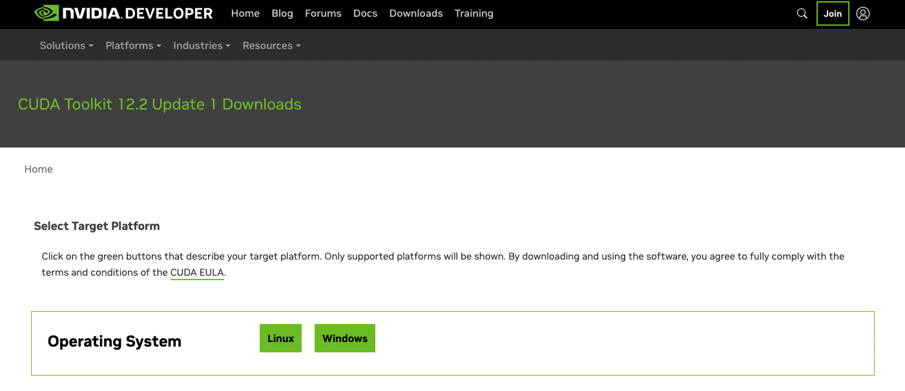

[Setting] cuda/cudnn 설치하기
[Setting] cuda/cudnn 설치하기
Ubuntu 환경에서 cuda/cudnn 설치하는 법을 다룹니다.
- CUDA 설치
-
사전 준비:
sudo apt update sudo apt upgrade -
NVIDIA 드라이버 설치:
NVIDIA GPU 드라이버가 설치되어 있지 않다면, Ubuntu의 기본 리포지토리를 사용하여 설치 가능
nvidia-smi명령어가 작동한다면 3. CUDA 설치로 바로 이동하면 됩니다.# sudo apt install nvidia-driver-xxx sudo apt install nvidia-driver-535 # 혹은 최신 버전으로 or sudo ubuntu-drivers autoinstall # 자동 설치- 재부팅:
sudo reboot- 설치된 드라이버 확인:
nvidia-smi -
CUDA 설치:
CUDA Toolkit - https://developer.nvidia.com/cuda-downloads
-
첫 페이지

-
설치 환경에 맞추어서 선택
-
해당 base installer의 내용을 복사후 터미널에 입력
-
-
환경변수 설정:
.bashrc나.zshrc파일에 아래 내용을 추가echo '# ---------- cuda setting ---------- #' >> ~/.bashrc # or ~/.zshrc echo 'export PATH=/usr/local/cuda/bin:$PATH' >> ~/.bashrc # or ~/.zshrc echo 'export LD_LIBRARY_PATH=/usr/local/cuda/lib64:$LD_LIBRARY_PATH' >> ~/.bashrc # or ~/.zshrc echo '# ----------------------------------- #' >> ~/.bashrc # or ~/.zshrc source ~/.bashrc # or ~/.zshrc exec $SHELL -
설치 확인:
nvcc --version# example > nvcc: NVIDIA (R) Cuda compiler driver > Copyright (c) 2005-2023 NVIDIA Corporation > Built on Tue_Jul_11_02:20:44_PDT_2023 > Cuda compilation tools, release 12.2, V12.2.128 > Build cuda_12.2.r12.2/compiler.33053471_0
- cuDNN 설치
-
파일 다운로드:
cuDNN Download - https://developer.nvidia.com/rdp/cudnn-download
환경에 맞는 파일을 다운합니다 -
cuDNN 설치:
# sudo chown _apt: <file_path> # sudo apt install <codnn-*.deb file> sudo chown _apt: /home/brother_gyu/dev/cudnn-local-repo-ubuntu2204-8.9.4.25_1.0-1_amd64.deb sudo apt install ./cudnn-local-repo-ubuntu2204-8.9.4.25_1.0-1_amd64.deb -
sudo apt update 에러 발생할 경우:
# ls /var/cudnn-local-repo-ubuntuxxxx-x.x.x.xx/ ls /var/cudnn-local-repo-ubuntu2204-8.9.4.25/ls /usr/share/keyrings/ls /var/cudnn-local-repo-ubuntuxxxx-x.x.x.xx/폴더 내의cudnn-local-*-keyring.gpg파일을/usr/share/keyrings/에 넣어줘야 합니다.# sudo cp /var/cudnn-local-repo-ubuntuxxxx-x.x.x.xx/cudnn-local-xxxxxxxx-keyring.gpg /usr/share/keyrings/ sudo cp /var/cudnn-local-repo-ubuntu2204-8.9.4.25/cudnn-local-3C3A81D3-keyring.gpg /usr/share/keyrings/이제 해결된 것을 확인할 수 있습니다.
-
라이브러리 설치
# sudo apt-get install libcudnn8=8.x.x.x-1+cudaX.Y # sudo apt-get install libcudnn8-dev=8.x.x.x-1+cudaX.Y # sudo apt-get install libcudnn8-samples=8.x.x.x-1+cudaX.Y sudo apt-get install libcudnn8=8.9.4.25-1+cuda12.2 sudo apt-get install libcudnn8-dev=8.9.4.25-1+cuda12.2 sudo apt-get install libcudnn8-samples=8.9.4.25-1+cuda12.2
- 정상 설치 테스트
-
pytorch 설치
pip install torch torchvision torchaudio -
test 코드
import torch print(torch.cuda.is_available()) # True t = torch.rand(100, 100).cuda() print(t.device) # cuda:*- 예시 결과
(dev_3.11.4) brother_gyu@rtx4060:~/dev$ python Python 3.11.4 (main, Aug 25 2023, 00:30:45) [GCC 11.4.0] on linux Type "help", "copyright", "credits" or "license" for more information. >>> import torch >>> print(torch.cuda.is_available()) True >>> t = torch.rand(100, 100).cuda() >>> print(t.device) cuda:0
Reference
cuDNN 설치법 - https://docs.nvidia.com/deeplearning/cudnn/install-guide/index.html#installlinux-deb
cuda_install.md [unofficial] - https://gist.github.com/denguir/b21aa66ae7fb1089655dd9de8351a202
댓글남기기